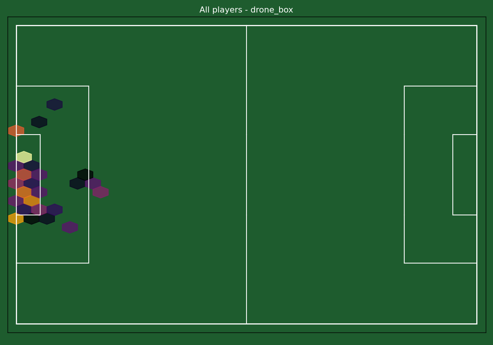
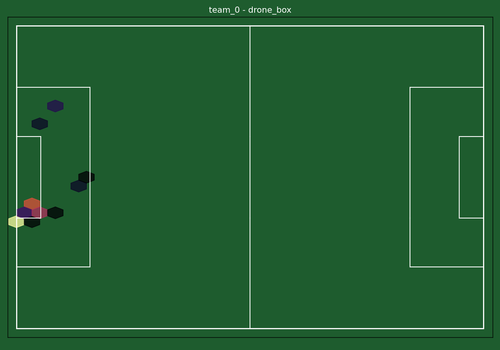
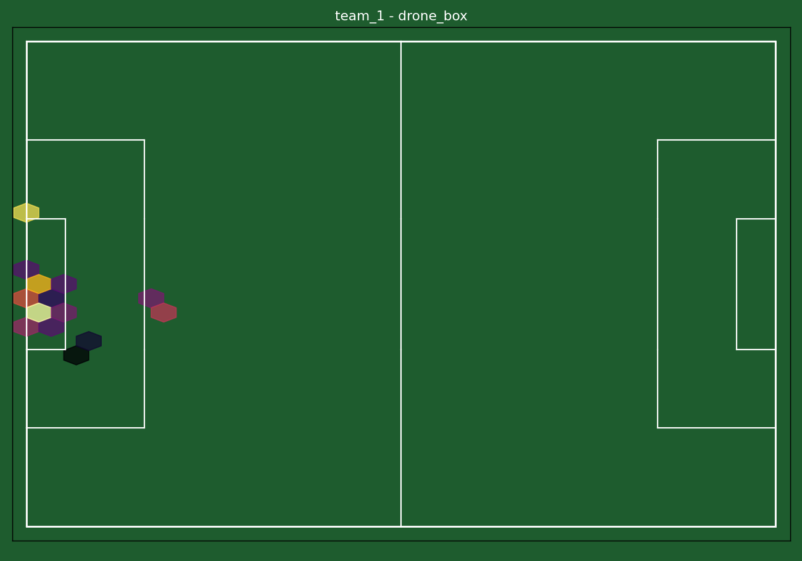
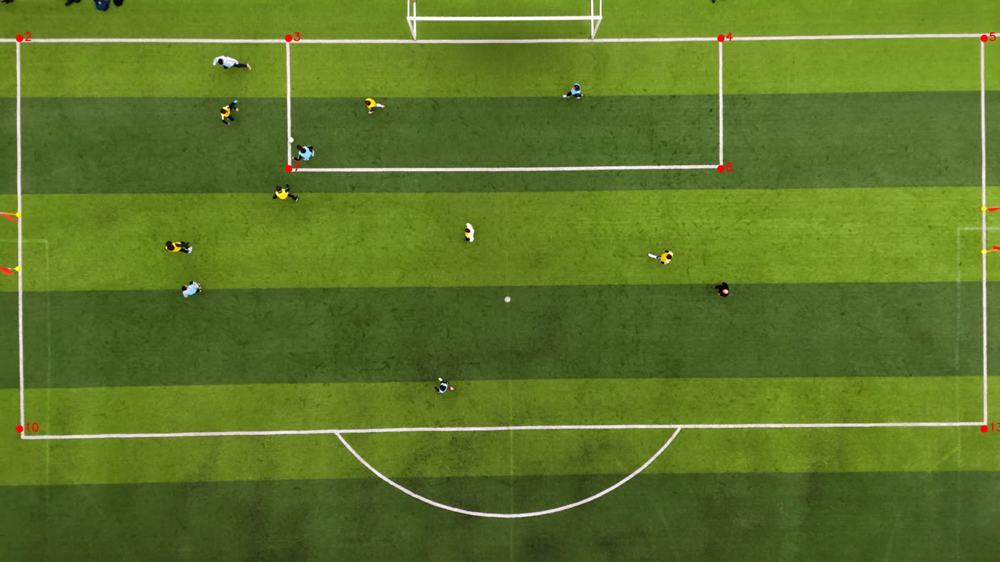

From raw drone footage to tracked players, automatically
Both clips below are the same real match video. The left one is untouched. The right one is the direct, unedited output of this repository's detection + tracking code — every box and ID is a real model prediction, frame by frame.
Same clip both sides. No manual annotation, no cherry-picked frames — this is what src/detect_and_track.py produces when you run it.
Built to be useful, not just a demo
Tracking data like this normally comes from six-figure optical tracking installations. This project shows the same data can be pulled straight out of ordinary broadcast or drone video — which changes who can afford to use it.
Recruitment & scouting
Turn any match footage a club already has — not just top-tier broadcast feeds — into positional data: how far a player roams, how much space their runs create, without buying a tracking-data contract.
Broadcast & media companies
Automatic heatmaps, team shape, and player movement graphics generated directly from existing camera feeds — no dedicated tracking hardware in the stadium required.
Sports journalism
Data-driven storytelling — "which player actually created the most space off the ball this match" — backed by a real, inspectable pipeline instead of a black-box vendor number.
Analytics & research teams
An open, auditable alternative to closed tracking vendors: every stage from pixels to metric is code you can read, rerun, and validate yourself.
Seven stages, video in — insight out
Each stage is a real, independently-runnable script (see src/), validated on real footage rather than synthetic placeholders.
Detection & tracking
YOLOv8 finds every player/ball per frame; ByteTrack links detections into persistent tracks across occlusion.
Pitch calibration
Automatic line detection (HSV + Hough transform) feeds a homography — pixels → real-world metres, no manual clicking.
Team ID
K-means clustering on jersey colour splits every track into team A / team B / referee.
Tracking dataset
Detections + teams + pitch coordinates joined into one dataset, with real elapsed-time speed per track.
Movement analysis
Positional role clustering and per-player/team heatmaps from real tracked positions.
Original metric
A Voronoi-based off-ball space-creation score — see below.
Dashboard
This page — a single self-contained file, no backend, no database.
Tracked playback
Real tracked positions from , projected into real-world pitch coordinates via the homography calibration described in Validation below. Every dot is an actual detected-and-tracked person or ball — nothing here is simulated.
Toggle a heatmap to see accumulated position density instead of live playback. Heatmaps are dense here because the current test clip is a few seconds of one box-focused camera angle — see the honest limitations note in Validation.
Where every team actually spent its time
Static renders of the same data as the interactive toggle above, straight out of src/generate_heatmaps.py.



Role clustering
Per-track k-means clustering on mean position, positional spread, and mean speed — grouping tracked players by how they actually moved, not by a lineup sheet.
| Track | Team | Frames | Mean X (m) | Mean Y (m) | Spread (m) | Mean speed (m/s) | Cluster |
|---|
Off-ball space creation score
The metric this project was built to produce — not a chart of where the ball was, but a number for what a player's movement did for their team.
python src/space_creation.py --self-test yourself). But the scores below, computed on the current real test clip, are numerically unstable — some values exceed 10,000 m² per metre of displacement. That's an honest symptom of too little data (only 13 of 114 frames have both teams visible at once in this box-focused clip), not a bug in the method. A meaningful, stable player ranking needs a full match's worth of tracking data.
| Track | Valid frames | Space-creation score (m²/m) |
|---|
How we know this is real, not a demo trick
Every number below comes from cross-checking the pipeline against known, fixed facts about a real football pitch — not from trusting the model output blindly.
The pitch-calibration homography is checked against four independent real-world measurements — goal-box width/depth and penalty-box width/depth — computed from the same fitted scale. All four agree within 1.4% of each other, and reprojecting the fitted points back onto the frame lands within about 8cm on average. This cross-check is what caught a real bug during development: the standard pitch-geometry constants had the penalty-box depth wrong (20.15m instead of the correct 16.5m) until this validation exposed the mismatch.

What's done, what's next
- ✓ 1. Data access (SoccerNet) — request pending, script ready
- ✓ 2. Detection & tracking (YOLOv8 + ByteTrack) — done, validated on real video
- ✓ 3. Pitch calibration (automatic line-detection homography) — done, validated to ~8cm mean error
- ✓ 4. Team/role assignment (jersey-colour clustering) — done, validated on real footage
- ✓ 5. Tracking dataset assembly (+ speed) — done, validated
- ✓ 6. Movement analysis (role clustering + heatmaps) — done, validated
- ✓ 7. Original contribution (space-creation score) — method validated, real ranking needs more data
- ✓ 8. Dashboard (this page) — done
Every stage above runs on real video with real output, not placeholder data — honest limitations (ball-tracking fragmentation with generic COCO weights, sparse teammate co-visibility in a short single-angle clip) are called out explicitly rather than hidden, matching this project's companion xG model's approach to reporting results.